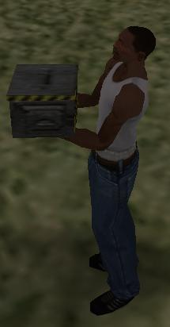
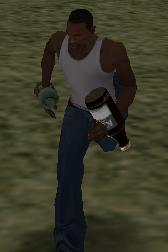

Encuentra toda la informacion que nesecites aqui.
En Grand Theft Auto San Andreas hay muchas cosas que puedes hacer con
objetos, pero no (y no puedo) contarte todo al respecto. Te dare lo suficiente
como para hacer cosas agradables y divertidas con ellos.
No repetire
(incluso si repito muchas cosas) como solicitar y cargar modelos para crear
objetos, se dice superior. No repetire como destruir/eliminar referencias y
liberar objetos por el mismo motivo.
Primero algunos generales (generales
porque hay codigos de operacion similares para vehiculos y actores) cosas sobre
coordenadas y desplazamientos. En algun momento debe saber donde se coloca el
objeto y, a veces, necesita saber cuales son las coordenadas que estan un poco
alejadas del objeto (esto se denomina desplazamiento):
01BB: store_object $object00 position_to $objpos_x $objpos_y $objpos_z 0400: create_coordinate $objpos_x $objpos_y $objpos_z from_object $object00 offset 1.02.0 3.0
00AA: store_car $car00 position_to $carpos_x $carpos_y $carpos_z 0407: create_coordinate $carpos_x $carpos_y $carpos_z from_car $car00 offset 1.0 2.0 3.0
Para los actores:
Una vez que se crea el objeto, puede mover el objeto a
nuevas coordenadas:
01BC: put_object $object00 at 2368.5601 -1666.84 13.38
Para informacion, codigos de operacionsimilares para actores y autos son:
00a1 para actores y 00ab paraautomoviles.
Puede usar esto para hacer que
el objetoavance, no es la mejor manera de hacerlo, pero es simple y funciona
bien. Aqui hay un ejemplo:
:MOVE_10 0001: wait 3 ms 00D6: if 0031: 0@ >= 200.0 //valor de punto flotante 004D: jump_if_false @MOV_90 01BC: put_object $object00 at 0@ 1@ 2@ 000B: 0@ += 0.1 //valor de punto flotante 0002: jump @MOVE_10
Puede ver aqui que el objeto se movera a lolargo del eje x, ya que cada 3ms
el objeto ira 0.1 unidad de distancia mas en el eje x hasta que 0@ (que esaqui
la unidad del eje x) alcanza 200.0 .NO OLVIDES LA ESPERA!!!!!!
De la misma
manera puedes cambiar los angulos de objeto creados xy y z
0453: objeto $object00 set_rotation 0.0 0.0 180.0
Igual que 01bc con un pequeño lazo, puede hacer que el objeto gire. Y en
cuanto a 01bc hay mejores formas de hacerlo, pero este es simple y funciona
bien. Tambien tiene la ventaja de darlela posibilidad de cambiar cualquier
angulo xy o z.
Pero tambien puedes usar 034d para que se mueva alrededor
del eje x:
034D: object $object00 at_angle 0.0 then_rotate_by_angle 360.0 flag 0
Asi es como Rockstar abre muchas puertas degaraje (no todas).
Pero
antes de usar codigos de operacion enmovimiento (como 034d o 0381) necesita
darle al objeto la capacidad de moverse (los objetos no pueden moverse cuando
los crea):
0392: objeto $object00 toggle_in_moving_list 1
Tambien puedes arrojar el objeto (como lanzar una pelota) con 0381:
0381: throw_object $object00 distance 20.0 10.0 5.0
Puede adjuntar objetos a automoviles, actores u otros objetos:
0681: attach_object $object00 to_car $car00 at_offset 0.50.3 0.3rotation 0.0 0.0 0.0
069B: attach_object $object00 to_actor $actor00 at_offset 0.0 0.5 -1.0 rotation 0.0 0.0 0.0
069A: attach_object $object00 to_object $object01 at_offset 0.0 0.0 0.0 rotation 0.0 0.0 0.0
Esas son bastante obvias, y como ya explique sobre las compensaciones,
entonces solo tendre que decir que las tres carrozas despues de la rotacion son
los angulos x y z que se estableceran, y que elobjeto no es solido cuando se
conecta con algo mas.
Si no quiere que el objeto sea solido, puede
desactivar la deteccion de colision
0382: set_object $object00 collision_detection 0
Puedes hacer que el objeto se pueda levantar de esta manera:

con 08e9:
08E9: set_object $object00 liftable 1
Como costumbre: 1 = encendido, 0 = apagado.
Esto es algo muy muy bueno
(gracias a DexX y PLPynton):

Puedes adjuntar objetos a las partes del cuerpo del actor, en realidad puedes
adjuntar 2 objetos al actor y hacer que el actorhaga una animacion !!!!!!!
Habra mas sobre animacion mas adelante, pero ahora los explicare:
070A: AS_actor $PLAYER_ACTOR attach_to_object $object00offset 0.0 0.00.0 on_bone 6 16 perform_animation "NULL" IFP_file "NULL" time 0
adjuntar el primer objeto (objeto A)
09A0: actor $PLAYER_ACTOR attach_object $object01with_offset 0.0 0.00.0 on_bone 5 16 perform_animation "NULL" IFP_file "NULL" time -1
adjuntar el segundo objeto (objeto B)
Para ambos :
Para quitar estos objetos, tienes dos codigos de operacion:
070B: set_actor $PLAYER_ACTOR onbone_attached_object_operation 1 //descartao separa el objeto B automaticamente con el objeto A 09A1: set_actor $PLAYER_ACTOR onbone_attached_objectB_operation 0 //coloca o sueltasolo el objeto
070b: separa / suelta el objeto A y B si elobjeto B esta adjunto
09a1:
separa / suelta el objeto B
Como dije, hay muchas cosas que hacer conobjetos en San Andreas, pero ahora
usted sabe las cosas mas importantes quepuede hacer.